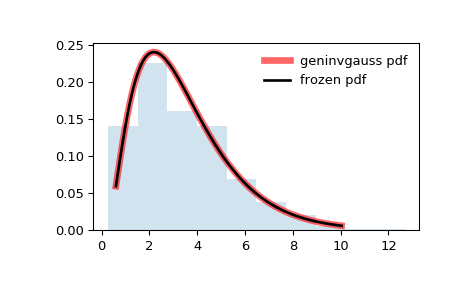

scipy.stats.geninvgauss¶
-
scipy.stats.geninvgauss= <scipy.stats._continuous_distns.geninvgauss_gen object>[source]¶ A Generalized Inverse Gaussian continuous random variable.
As an instance of the
rv_continuousclass,geninvgaussobject inherits from it a collection of generic methods (see below for the full list), and completes them with details specific for this particular distribution.Notes
The probability density function for
geninvgaussis:\[f(x, p, b) = x^{p-1} \exp(-b (x + 1/x) / 2) / (2 K_p(b))\]where x > 0, and the parameters p, b satisfy b > 0 ([1]). \(K_p\) is the modified Bessel function of second kind of order p (
scipy.special.kv).The probability density above is defined in the “standardized” form. To shift and/or scale the distribution use the
locandscaleparameters. Specifically,geninvgauss.pdf(x, p, b, loc, scale)is identically equivalent togeninvgauss.pdf(y, p, b) / scalewithy = (x - loc) / scale.The inverse Gaussian distribution stats.invgauss(mu) is a special case of
geninvgausswith p = -1/2, b = 1 / mu and scale = mu.Generating random variates is challenging for this distribution. The implementation is based on [2].
References
- 1
O. Barndorff-Nielsen, P. Blaesild, C. Halgreen, “First hitting time models for the generalized inverse gaussian distribution”, Stochastic Processes and their Applications 7, pp. 49–54, 1978.
- 2
W. Hoermann and J. Leydold, “Generating generalized inverse Gaussian random variates”, Statistics and Computing, 24(4), p. 547–557, 2014.
Examples
>>> from scipy.stats import geninvgauss >>> import matplotlib.pyplot as plt >>> fig, ax = plt.subplots(1, 1)
Calculate a few first moments:
>>> p, b = 2.3, 1.5 >>> mean, var, skew, kurt = geninvgauss.stats(p, b, moments='mvsk')
Display the probability density function (
pdf):>>> x = np.linspace(geninvgauss.ppf(0.01, p, b), ... geninvgauss.ppf(0.99, p, b), 100) >>> ax.plot(x, geninvgauss.pdf(x, p, b), ... 'r-', lw=5, alpha=0.6, label='geninvgauss pdf')
Alternatively, the distribution object can be called (as a function) to fix the shape, location and scale parameters. This returns a “frozen” RV object holding the given parameters fixed.
Freeze the distribution and display the frozen
pdf:>>> rv = geninvgauss(p, b) >>> ax.plot(x, rv.pdf(x), 'k-', lw=2, label='frozen pdf')
Check accuracy of
cdfandppf:>>> vals = geninvgauss.ppf([0.001, 0.5, 0.999], p, b) >>> np.allclose([0.001, 0.5, 0.999], geninvgauss.cdf(vals, p, b)) True
Generate random numbers:
>>> r = geninvgauss.rvs(p, b, size=1000)
And compare the histogram:
>>> ax.hist(r, density=True, histtype='stepfilled', alpha=0.2) >>> ax.legend(loc='best', frameon=False) >>> plt.show()
Methods
rvs(p, b, loc=0, scale=1, size=1, random_state=None)
Random variates.
pdf(x, p, b, loc=0, scale=1)
Probability density function.
logpdf(x, p, b, loc=0, scale=1)
Log of the probability density function.
cdf(x, p, b, loc=0, scale=1)
Cumulative distribution function.
logcdf(x, p, b, loc=0, scale=1)
Log of the cumulative distribution function.
sf(x, p, b, loc=0, scale=1)
Survival function (also defined as
1 - cdf, but sf is sometimes more accurate).logsf(x, p, b, loc=0, scale=1)
Log of the survival function.
ppf(q, p, b, loc=0, scale=1)
Percent point function (inverse of
cdf— percentiles).isf(q, p, b, loc=0, scale=1)
Inverse survival function (inverse of
sf).moment(n, p, b, loc=0, scale=1)
Non-central moment of order n
stats(p, b, loc=0, scale=1, moments=’mv’)
Mean(‘m’), variance(‘v’), skew(‘s’), and/or kurtosis(‘k’).
entropy(p, b, loc=0, scale=1)
(Differential) entropy of the RV.
fit(data, p, b, loc=0, scale=1)
Parameter estimates for generic data.
expect(func, args=(p, b), loc=0, scale=1, lb=None, ub=None, conditional=False, **kwds)
Expected value of a function (of one argument) with respect to the distribution.
median(p, b, loc=0, scale=1)
Median of the distribution.
mean(p, b, loc=0, scale=1)
Mean of the distribution.
var(p, b, loc=0, scale=1)
Variance of the distribution.
std(p, b, loc=0, scale=1)
Standard deviation of the distribution.
interval(alpha, p, b, loc=0, scale=1)
Endpoints of the range that contains alpha percent of the distribution